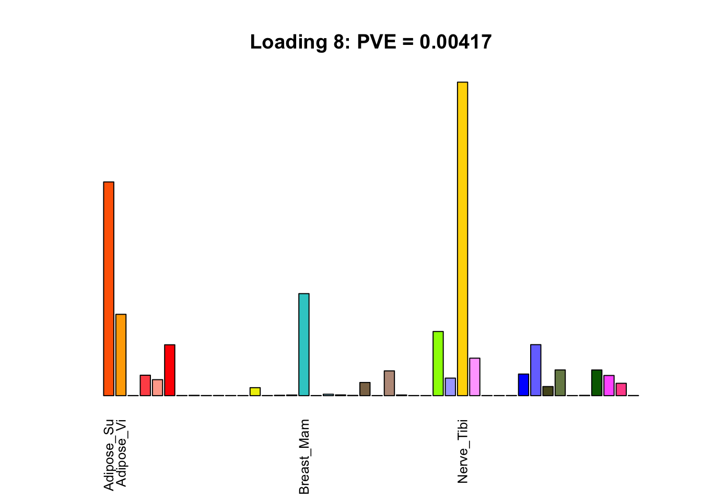
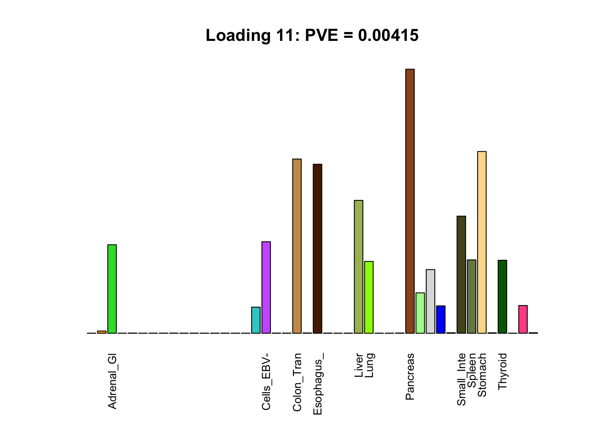
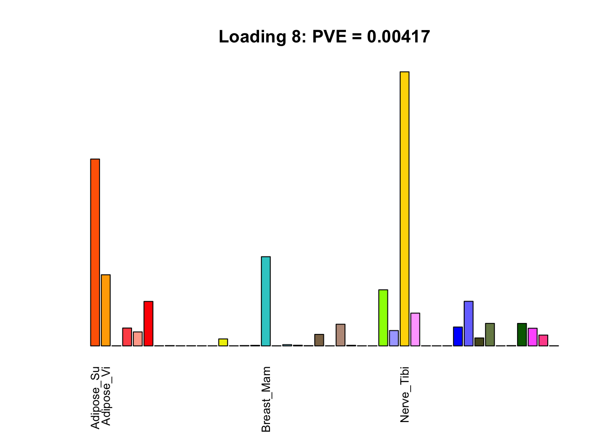
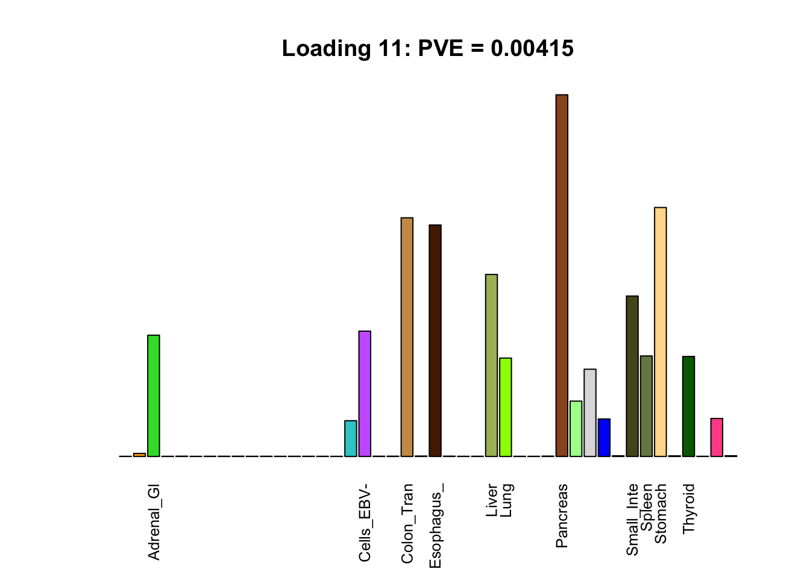
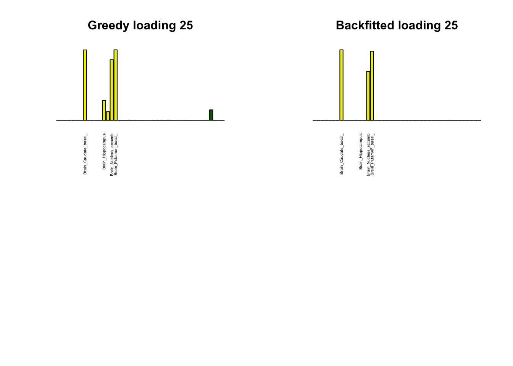
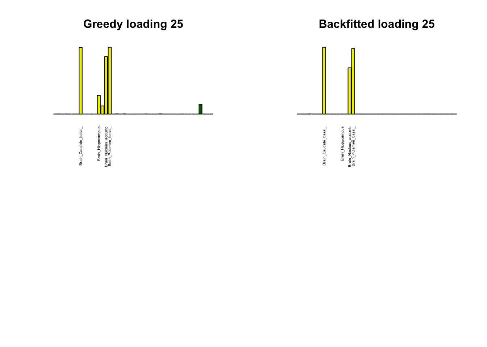

Nonnegative FLASH loadings
Last updated: 2018-08-13
workflowr checks: (Click a bullet for more information)-
✔ R Markdown file: up-to-date
Great! Since the R Markdown file has been committed to the Git repository, you know the exact version of the code that produced these results.
-
✔ Environment: empty
Great job! The global environment was empty. Objects defined in the global environment can affect the analysis in your R Markdown file in unknown ways. For reproduciblity it’s best to always run the code in an empty environment.
-
✔ Seed:
set.seed(20180609)The command
set.seed(20180609)was run prior to running the code in the R Markdown file. Setting a seed ensures that any results that rely on randomness, e.g. subsampling or permutations, are reproducible. -
✔ Session information: recorded
Great job! Recording the operating system, R version, and package versions is critical for reproducibility.
-
Great! You are using Git for version control. Tracking code development and connecting the code version to the results is critical for reproducibility. The version displayed above was the version of the Git repository at the time these results were generated.✔ Repository version: 07c51b7
Note that you need to be careful to ensure that all relevant files for the analysis have been committed to Git prior to generating the results (you can usewflow_publishorwflow_git_commit). workflowr only checks the R Markdown file, but you know if there are other scripts or data files that it depends on. Below is the status of the Git repository when the results were generated:
Note that any generated files, e.g. HTML, png, CSS, etc., are not included in this status report because it is ok for generated content to have uncommitted changes.Ignored files: Ignored: .DS_Store Ignored: .Rhistory Ignored: .Rproj.user/ Ignored: data/ Ignored: docs/.DS_Store Ignored: docs/images/.DS_Store Ignored: docs/images/.Rapp.history Ignored: output/.DS_Store Ignored: output/.Rapp.history Ignored: output/MASHvFLASHgtex/.DS_Store Ignored: output/MASHvFLASHsims/.DS_Store Ignored: output/MASHvFLASHsims/backfit/.DS_Store Ignored: output/MASHvFLASHsims/backfit/.Rapp.history
Expand here to see past versions:
| File | Version | Author | Date | Message |
|---|---|---|---|---|
| Rmd | 07c51b7 | Jason Willwerscheid | 2018-08-13 | wflow_publish(“analysis/MASHvFLASHnn.Rmd”) |
Introduction
I argued in the previous analysis that better loadings might be obtained if nonnegative priors were used. Here I fit a flash object to the “strong” GTEx dataset using “+uniform” ash priors on the loadings.
Fitting procedure
I alternate between greedily adding factor/loading pairs (with “+uniform” ash priors on the loadings and normal-mixture ash priors on the factors) and backfitting the entire flash object. For the backfits, I set tol = 1 because convergence can be very slow. I repeat these two steps until flash_add_greedy no longer adds any additional factor/loadings.
iteration <- 1:7
factors_added <- c(34, 1, 1, 1, 2, 1, 0)
factors_zeroed_out <- c(0, 0, 1, 0, 0, 0, 0)
objective <- -1250000 - c(7689, 7595, 7140, 6685, 6362, 6098, 6098)
minutes_taken <- c(61, 3, 13, 26, 8, 16, 0)
data <- data.frame("Iteration" = iteration,
"Factors added" = factors_added,
"Factors deleted" = factors_zeroed_out,
"Final objective" = objective,
"Minutes" = minutes_taken)
knitr::kable(data)| Iteration | Factors.added | Factors.deleted | Final.objective | Minutes |
|---|---|---|---|---|
| 1 | 34 | 0 | -1257689 | 61 |
| 2 | 1 | 0 | -1257595 | 3 |
| 3 | 1 | 1 | -1257140 | 13 |
| 4 | 1 | 0 | -1256685 | 26 |
| 5 | 2 | 0 | -1256362 | 8 |
| 6 | 1 | 0 | -1256098 | 16 |
| 7 | 0 | 0 | -1256098 | 0 |
Finally, I tighten the tolerance to 0.1 and run a final backfit, which increases the objective to -1256080 (this takes 25 minutes).
Loadings
I load the results from file.
devtools::load_all("/Users/willwerscheid/GitHub/flashr/")Loading flashrfl <- readRDS("./output/MASHvFLASHnn/fl.rds")
fl_g <- readRDS("./output/MASHvFLASHnn/fl_g.rds")Equal effects
The first loading is well represented by the canonical “equal effects” loading.
missing.tissues <- c(7, 8, 19, 20, 24, 25, 31, 34, 37)
gtex.colors <- read.table("https://github.com/stephenslab/gtexresults/blob/master/data/GTExColors.txt?raw=TRUE", sep = '\t', comment.char = '')[-missing.tissues, 2]
pve <- flash_get_pve(fl, drop_zero_factors = FALSE)
par(mar=c(1,1,1,1))
barplot(fl$EL[, 1],
main=paste0('Loading 1: PVE = ', signif(pve[1], digits=3)),
las=2, cex.names=0.4, yaxt='n',
col=as.character(gtex.colors), names="")Unique effects
Many loadings are well approximated by canonical “unique effects.” Loadings 3, 4, 7, 9-10, 14-16, 18-21, 26-29, and 32-40 place nearly all of their weight on a single tissue.
uniq <- c(3, 4, 7, 9, 10, 14:16, 18:21, 26:29, 32:40)
uniq_order <- order(pve[uniq], decreasing = TRUE)
tissue_names <- rownames(fl$EL)
par(mar=c(1,1,1,1))
par(mfrow=c(3,2))
for(i in uniq[uniq_order]){
barplot(fl$EL[, i],
main=paste0(tissue_names[which.max(fl$EL[, i])],
': PVE = ', signif(pve[i], digits=3)),
las=2, cex.names=0.4, yaxt='n',
col=as.character(gtex.colors), names="")
}
Multi-tissue effects
The remaining loadings pick up on effects that are strongly correlated across several tissues. These are the loadings I’m especially interested in, since they correspond to correlation structures that are not covered by canonical loadings.
multi <- c(2, 5, 6, 8, 11:13, 17, 22:25, 31)
multi_order <- order(pve[multi], decreasing = TRUE)
display_names <- strtrim(tissue_names, 10)
for(i in multi[multi_order]){
plot_names <- display_names
plot_names[fl$EL[, i] < 0.25 * max(fl$EL[, i])] <- ""
barplot(fl$EL[, i],
main=paste0('Loading ', i,
': PVE = ', signif(pve[i], digits=3)),
las=2, cex.names=0.8, yaxt='n',
col=as.character(gtex.colors), names=plot_names)
} 

Greedy multi-tissue effects
As indicated above, these loadings take about two and a half hours to obtain. However, loadings that are qualitatively very similar can be obtained via a single call to flash_add_greedy (with no backfitting), which takes less than 15 minutes. A comparison between these easily obtained loadings and the loadings yielded by the more laborious procedure detailed above follows:
par(mfrow=c(2,2))
display_names <- strtrim(tissue_names, 20)
for(i in multi[multi_order]){
plot_names <- display_names
plot_names[fl_g$EL[, i] < 0.25 * max(fl_g$EL[, i])] <- ""
barplot(fl_g$EL[, i],
main=paste0('Greedy loading ', i),
las=2, cex.names=0.4, yaxt='n',
col=as.character(gtex.colors), names=plot_names)
barplot(fl$EL[, i],
main=paste0('Backfitted loading ', i),
las=2, cex.names=0.4, yaxt='n',
col=as.character(gtex.colors), names=plot_names)
} 

Code
Click “Code” to view the code used to obtain the above results.
devtools::load_all("/Users/willwerscheid/GitHub/flashr/")
gtex <- readRDS(gzcon(url("https://github.com/stephenslab/gtexresults/blob/master/data/MatrixEQTLSumStats.Portable.Z.rds?raw=TRUE")))
strong <- t(gtex$strong.z)
strong_data <- flash_set_data(strong, S = 1)
ebnm_param = list(f = list(), l = list(mixcompdist="+uniform"))
system.time(
fl <- flash_add_greedy(strong_data,
100,
var_type="zero",
ebnm_fn="ebnm_ash",
ebnm_param=ebnm_param)
)
saveRDS(fl, "/Users/willwerscheid/GitHub/MASHvFLASH/output/MASHvFLASHnn/fl_g.rds")
system.time(
fl <- flash_backfit(strong_data,
f_init=fl,
var_type="zero",
ebnm_fn="ebnm_ash",
ebnm_param=ebnm_param,
tol=1)
)
# Repeat the following two steps until flash_add_greedy no longer adds
# any factors:
system.time(
fl <- flash_add_greedy(strong_data,
100,
f_init=fl,
var_type="zero",
ebnm_fn="ebnm_ash",
ebnm_param=ebnm_param)
)
system.time(
fl <- flash_backfit(strong_data,
f_init=fl,
var_type="zero",
ebnm_fn="ebnm_ash",
ebnm_param=ebnm_param,
tol=1)
)
saveRDS(fl, "/Users/willwerscheid/GitHub/MASHvFLASH/output/MASHvFLASHnn/fl.rds")
# Tighten the tolerance and run a final backfit:
system.time(
fl <- flash_backfit(strong_data,
f_init=fl,
var_type="zero",
ebnm_fn="ebnm_ash",
ebnm_param=ebnm_param,
tol=0.1)
)
saveRDS(fl, "/Users/willwerscheid/GitHub/MASHvFLASH/output/MASHvFLASHnn/fl.rds")Session information
sessionInfo()R version 3.4.3 (2017-11-30)
Platform: x86_64-apple-darwin15.6.0 (64-bit)
Running under: macOS High Sierra 10.13.6
Matrix products: default
BLAS: /Library/Frameworks/R.framework/Versions/3.4/Resources/lib/libRblas.0.dylib
LAPACK: /Library/Frameworks/R.framework/Versions/3.4/Resources/lib/libRlapack.dylib
locale:
[1] en_US.UTF-8/en_US.UTF-8/en_US.UTF-8/C/en_US.UTF-8/en_US.UTF-8
attached base packages:
[1] stats graphics grDevices utils datasets methods base
other attached packages:
[1] flashr_0.5-14
loaded via a namespace (and not attached):
[1] Rcpp_0.12.17 pillar_1.2.1 plyr_1.8.4
[4] compiler_3.4.3 git2r_0.21.0 highr_0.6
[7] workflowr_1.0.1 R.methodsS3_1.7.1 R.utils_2.6.0
[10] iterators_1.0.9 tools_3.4.3 testthat_2.0.0
[13] digest_0.6.15 tibble_1.4.2 evaluate_0.10.1
[16] memoise_1.1.0 gtable_0.2.0 lattice_0.20-35
[19] rlang_0.2.0 Matrix_1.2-12 foreach_1.4.4
[22] commonmark_1.4 yaml_2.1.17 parallel_3.4.3
[25] ebnm_0.1-12 withr_2.1.1.9000 stringr_1.3.0
[28] roxygen2_6.0.1.9000 xml2_1.2.0 knitr_1.20
[31] devtools_1.13.4 rprojroot_1.3-2 grid_3.4.3
[34] R6_2.2.2 rmarkdown_1.8 ggplot2_2.2.1
[37] ashr_2.2-10 magrittr_1.5 whisker_0.3-2
[40] scales_0.5.0 backports_1.1.2 codetools_0.2-15
[43] htmltools_0.3.6 MASS_7.3-48 assertthat_0.2.0
[46] softImpute_1.4 colorspace_1.3-2 stringi_1.1.6
[49] lazyeval_0.2.1 munsell_0.4.3 doParallel_1.0.11
[52] pscl_1.5.2 truncnorm_1.0-8 SQUAREM_2017.10-1
[55] R.oo_1.21.0 This reproducible R Markdown analysis was created with workflowr 1.0.1